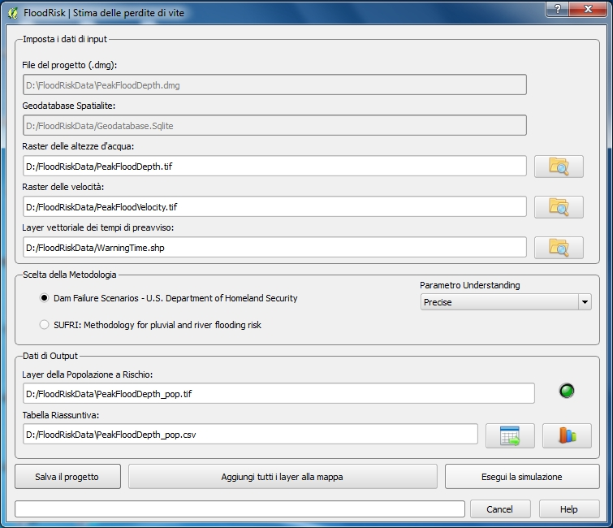

Stima delle perdite di vite¶
La finestra Stima delle perdite di vite consente di valutare la mappa della popolazione a rischio ed il numero di potenziali vittime. La mappa della popolazione a rischio è ottenuta mediante sovrapposizione della mappa dell’inondazione e quella della densità di popolazione. Una volta che sia ottenuta la mappa della popolazione a rischio, il numero di potenziali perdite di vite è ottenuta motiplicando la popolazione a rishio per la percentuale di perdite* (*fatality rate).

- I dati riguardanti popolazione e la loro vulnerabilità sono memorizzati nel geodatabase.
- I dati riguardanti il pericolo sono mappe di altezza massime e velocità massime dovute all’inondazione. Questi dati sono output di modelli idraulici 2D e sono caricarti nel sistema tramite un qualsiasi file del tipo GDAL Raster Formats.
- Un ulteriore dato necessario per la valutazione della vulnerabilità è la mappa dei tempi di preavviso. Il tempo di preavviso indica la quantità di tempo che intercorre fra la ricezione dell’avviso e l’istante in cui la popolazione e ogni struttura è interessato dall’evento di inondazione. Questi dati devono essere del tipo shapefile di poligoni avente il campo “TimeHours” contenente il valore del tempo di prevviso in ore.
- I risultati sono mappe della popolazione a rischio ed in numero di potenziali vittime ed una Tabella Riassuntiva dei risultati che può essere visualizzata anche in forma grafica (istogramma).
I file dei risultati sono:
Layer della popolazione a rishio (*_pop.tif): un file tipo GeoTIFF File Format avente come output due bande:
band1: densità della popolazione a rischio (persone per km quadrato) band2: densità di perdite di vite (persone per km quadrato) Tabella Riassuntiva (*_pop.csv): un file tipo csv File Format contenete la tabella dei risultati raggruppato per Intervalli di altezze d’acqua